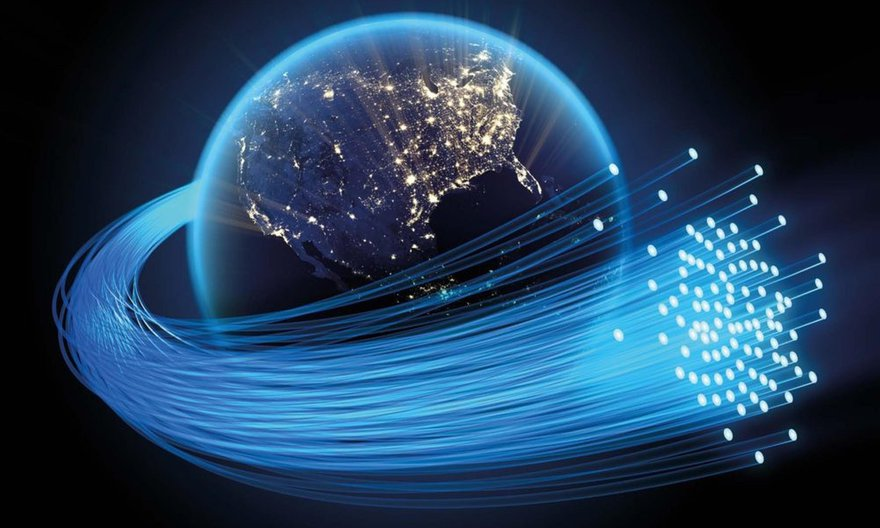

"¡Bienvenidos a Redes Infinitas, donde la conexión no tiene límites!"
"Descubre los conceptos básicos de redes, cableado estructurado, fibra óptica y cámaras de seguridad con nosotros. Te ofrecemos información esencial y tips rápidos para que puedas comprender y aplicar estos conocimientos en tu día a día. Aprende a identificar los componentes clave, a realizar instalaciones sencillas y a mantener tu red segura y funcionando correctamente. Ideal para quienes buscan información concisa y práctica."
Sobre Blog
"Tu guía esencial para navegar el universo de las redes. Desglosamos los conceptos clave del cableado estructurado, la fibra óptica y los sistemas de seguridad CCTV, ofreciendo explicaciones claras y directas. Nuestro objetivo es hacer que la información técnica sea accesible para todos, desde principiantes hasta profesionales. Aquí encontrarás tutoriales prácticos, consejos útiles y respuestas a tus preguntas más frecuentes. Te acompañamos en cada paso, desde la instalación básica hasta la resolución de problemas, para que puedas construir redes confiables y seguras."
"UN CABLE A LA VEZ"
Artículos
En esta sección encontrarás artículos técnicos con información desde nivel básico hasta avanzado sobre redes, cableado estructurado, fibra óptica y cámaras de seguridad. El objetivo es ayudarte a aprender, mejorar tus conocimientos y aplicar buenas prácticas en tus instalaciones.

Guías Técnicas
Aquí compartimos guías técnicas detalladas con procedimientos paso a paso sobre instalación, configuración y mantenimiento de redes, fibra óptica, cableado estructurado y videovigilancia. Nuestro objetivo es ayudarte a realizar proyectos de forma correcta y segura.
| Tema | Descripción | Enlace |
|---|---|---|
| Cableado Estructurado | Instalación, en sistemas de cableado estructurado, basados en experiencia real de campo. | Ver |
| Fibra Óptica | Instalación, mantenimiento y diagnóstico de enlaces de fibra óptica en entornos reales. | Ver |
| Redes | Implementación, configuración, con enfoque práctico y basado en experiencia en campo. | Ver |
| Cámaras de Seguridad | Implementación y mantenimiento de sistemas de videovigilancia en entornos reales. | Ver |
Solución de Problemas
¿Tienes inconvenientes con tu red, cámaras o enlaces inalámbricos? En esta sección encontrarás diagnósticos claros y soluciones prácticas para las fallas más comunes en instalaciones técnicas.
Herramientas Útiles
Utiliza nuestras calculadoras prácticas para estimar la cantidad de cámaras, el consumo de energía PoE y la cobertura de puntos de acceso inalámbricos, ideales para técnicos, instaladores y profesionales del área.
Proyectos Destacados
Estos son algunos de los proyectos reales en los que he participado, enfocados en redes, cableado estructurado, WiFi empresarial y seguridad. Haz clic en cada proyecto para ver los detalles completos, tecnologías utilizadas y resultados obtenidos.
Instalación de Cableado Estructurado en Sucursal AT&T
Implementación de infraestructura de red, WiFi y CCTV con rack, panel de parcheo y organización profesional.
Infraestructura de Red y WiFi en Escuela
Diseño de red, cableado estructurado y segmentación con VLANs para alumnos y docentes.